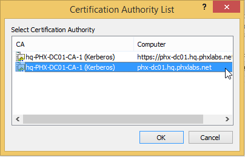
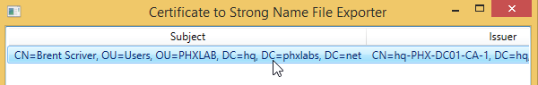
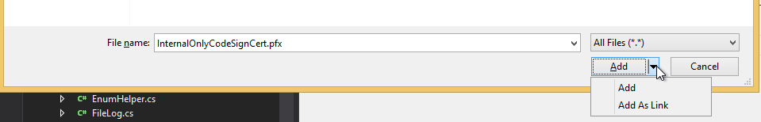
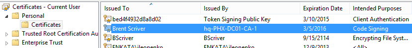
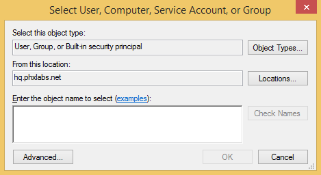
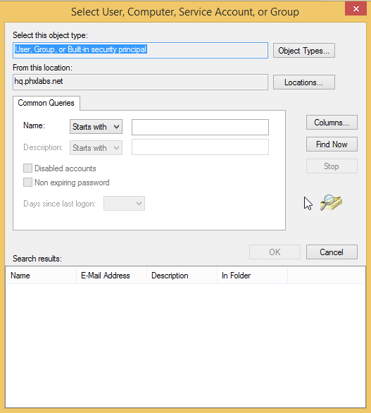

Motivation
We have a number of tools we distribute internally that we want to ensure are signed (particularly ClickOnce applications).
The goals were:
- Anyone on the team could build the tools (including ClickOnce tools) and publish them.
- No one on the team has to go through manual steps: they ought to be able to sync and build.
- No dialog popups during the build (such as passwords).
- No trust issues when using the tools--Certificates are trusted.
Publishing ClickOnce applications requires strong name signing all assemblies as well as using a certificate to sign the ClickOnce manifest. We needed to get a certificate with both public and private keys to be able to do so.
To enable anyone on the team to be able to sign the application I wanted to be able to submit our certificate (with both public and private key) into Perforce so it is synced with the tools. This would solve 1 & 2.
Submitting a certificate to Perforce would be a security issue if the certificate is issued by an external authority trusted by Windows users. To facilitate this we set up our own Certificate Server. Certificate Server is a Certificate Authority that can be joined to the domain so all domain users would trust certificates issued by this authority, yet not trusted by any normal Windows user. We can then issue code signing certificates at will. This solves 4.
These certificates also allow using Group Policy Objects to control access to the certificate, removing the need for a password. This solves 3.
Environment
We are running Windows Server 2012 R2 for our domain servers and Windows 8.1 for client machines.
Set Up Certificate Server
On the Domain Controller:
- Go to Server Manager
- Manage
- Add Roles and Features
- Role-based or feature-based installation
- Select the current server
- Active Directory Certificate Services, including:
- Certificate Authority
- Certificate Enrollment Policy Web Service
- Certificate Enrollment Web Service
- Certificate Authority Web Enrollment
- Note that additional requirements will automatically be included, such as IIS.
- Finish the installation
After installation and possibly reboot there will be a task to configure the Certificate Authority. Configure the server as an Enterprise CA. This will simplify requesting new certificates dramatically and enable functionality not available in the non-Enterprise scenario.
Now let’s add the code signing template to the Certificate Authority.
- Start CertMgr.msc
- Click on “Certificate Templates”
- Action->New->Certificate Template to Issue
- Select “Code Signing”
- OK
Generate the Certificate into Your Personal Certificate Store
- Download CodeSigningKeyRequest.inf on GitHub locally
- Start cmd.exe
- Change to the download directory
- certreq -new CodeSigningKeyRequest.inf CodeSigningKeyRequest.req
- certreq -submit CodeSigningKeyRequest.req
It should pop up a dialog to select a certificate authority. Select the second.

A save dialog will appear. Save the file as a .cer in the same location as the .req file.
- certreq -accept CodeSigningKeyRequest.cer
This will import the certificate into your personal certificate store with the private key.
Signing Assemblies
Export the Certificate to a Strong Name Key (SNK) File
- Run ExportCert.exe (available from: ExportCert on GitHub)
- Double click on the certificate from the certificate store

Note: only certificates that are valid for code signing with the enhanced key usage extensions defined in the inf file above will be listed.
- Save the file (to an snk file)
- Add the file to source control
Configure the Project for Signing
- Open the solution.
- Right click on the project
- Add Existing File (Note: doing this from any other location in the project in the root will result in the snk file not showing up in the drop down for choosing the snk file. Once the snk file is chosen you can move it after).
- Select the exported strong name key file
- Select “Add As Link”:

- Right Click on the Project
- Select Properties
- Select the Signing tab
- Enable “Sign the Assembly”
- Select the snk file in the “Choose a strong name key file”
Signing Click Once Assemblies
Export the Certificate
- Run certmgr.msc from the command line
- Find the certificate in your certificate store. It ought to appear under Personal\Certificate with your user name and the same CA issuer you selected above. It will also specify an “Intended Purposes” of “Code Signing”.

- Open the certificate (double click or right click and open)
- Details Tab
- Copy To File button
- In the wizard select:
- Yes, Export the private key, Next
- Accept default, Next
- Use Group or User Names, Add


- Select Find Now
- Find “Domain Users” in the Search Results and double click on it.
- Select OK
- Remove yourself from the user list.
- Next
- Save the pfx file out
- Add the pfx file that was saved to Perforce
Signing Assemblies with the Certificate
- Open the solution.
- Right click on the project
- Add Existing File (Note: doing this from any other location in the project in the root will result in the snk file not showing up in the drop down for choosing the snk file. Once the snk file is chosen you can move it after).
- Select the exported strong name key file
- Select “Add As Link”:
- Right Click on the Project
- Select Properties
- Select the Signing tab
- Enable “Sign the ClickOnce manifests”
- Choose “Select from File”
- Select the pfx file. It should load automatically without requiring a password.
References
{kind=link}